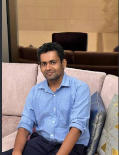
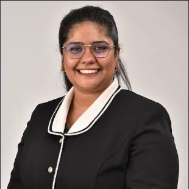
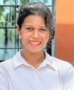

Completed research project · Secure Elder-Care Monitoring Platform · R26_IT_055 · AIMS
Home / Team
AIMS · Project R26_IT_055
Research Team
Meet the student researchers and academic supervisors guiding the project.
Academic guidance
Project Supervisors
Our project is guided by two supervisors and a co-supervisor.


AIMS · Project R26_IT_055
Project Leader & Research Members
R.M.V.R. Rathnayaka leads the project. Himaya Jayasinghe, D.M.D.L. Dedunu and Chamathka B.M.G.N. are component team members.
Project Leader · Pose-Based Anomaly Detection
R.M.V.R. Rathnayaka
Student ID: IT22075208
Developed temporal pose analysis for falls, aggression, prolonged inactivity and other unusual movement.
SLIIT email: it22075208@my.sliit.lk
Personal email: viduraruwantha2002@gmail.com
Team Member · Tracking, Geofencing & Caregiver Continuity
D.M.D.L. Dedunu
Student ID: IT22171788
Developed persistent person tracking, depth-aware safety zones, exit alerts and caregiver absence monitoring.
SLIIT email: it22171788@my.sliit.lk
Personal email: devinduld@gmail.com

Team Member · Schedule & Activity Monitoring
Chamathka B.M.G.N.
Student ID: IT22143686
Developed camera-based activity and routine monitoring, including schedule matching, missed-activity checks and caregiver notifications.
SLIIT email: it22143686@my.sliit.lk
Personal email: chamathkanethmi11@gmail.com
Team Member · Skeleton-Based Identification & Biometric Gait Analysis
Himaya Jayasinghe
Student ID: IT22240392
Builds privacy-conscious person identification from skeletal proportions and walking patterns, including when a face is not visible.
SLIIT email: it22240392@my.sliit.lk
Personal email: hbinushi@gmail.com
Research group
AIMS
Artificial Intelligence and Machine Learning Systems (AIMS), as identified in the supplied component specifications.
Project identity
Secure Elder-Care Monitoring Platform
Project ID: R26_IT_055
Research area: video-based AI for elder-care monitoring
Research components: identification, tracking/geofencing, anomaly detection and schedule monitoring.